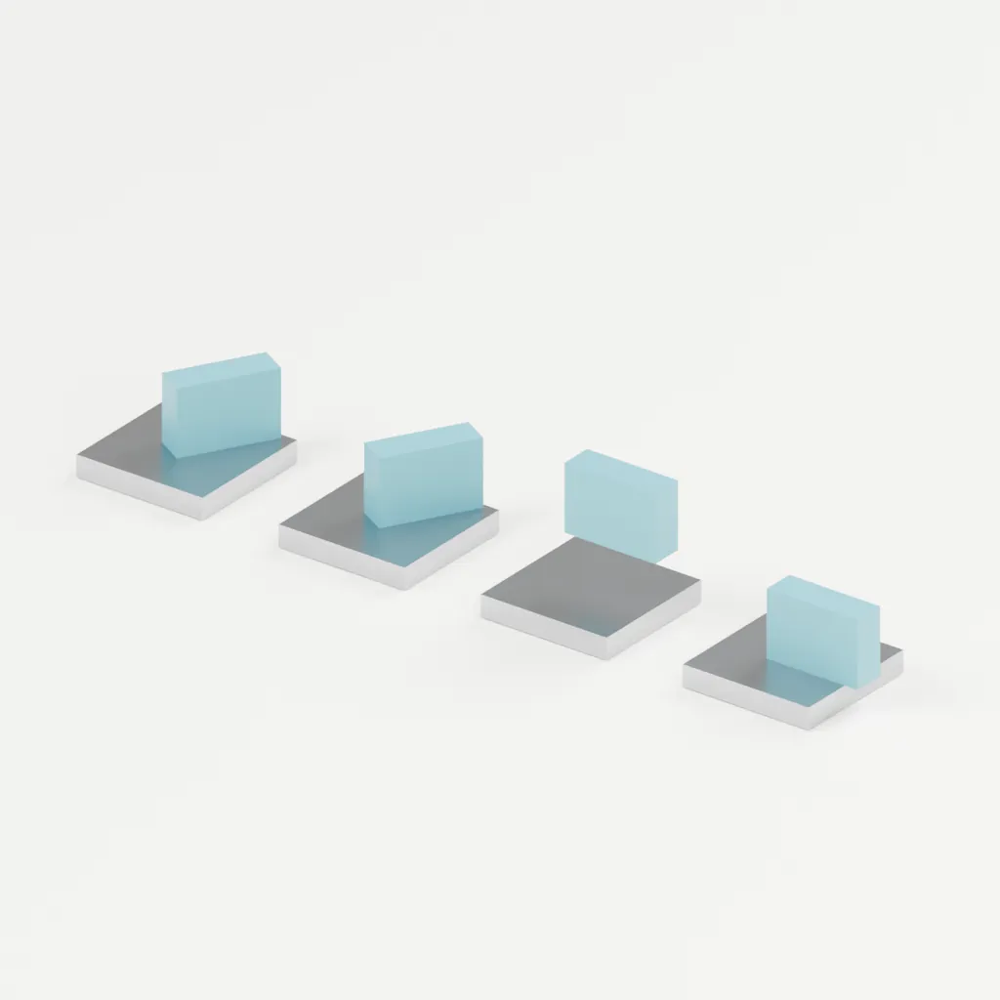

A joint does not align or move its child. Use at to put the child where it rests, then declare the joint. Every joint starts at zero. Build and declare the whole mechanism at rest before posing it.
The frame on identifies both the pivot and the parent. Read it from that parent with ob.face, bbox, local or an assembly anchor. Its parent identity survives .move, .turn and .offset. Never read it on the moving child or one of that child's descendants. A bare Frame has no parent; publish it as an assembly anchor first.
axis="normal" follows the pivot frame's Z, including its turns. axis="+Z" means Z of the space containing the parent, not necessarily Z of the parent's own mesh. A positive slide travels along the axis. A positive turn obeys the right hand: about +Z, +X turns toward +Y.
On a face looking +X, frame X points +Y and frame Y points up. A door hinged at that face's -Y edge opens outward about -Z.
Four kinds
Kind
Motion
Range
Pose value
revolute
Rotation about the pivot
Required, contains 0
Degrees
continuous
Unlimited rotation
Forbidden
Degrees
prismatic
Translation along the axis
Required, contains 0
Program units
free
Unconstrained connection
Forbidden; omit axis too
No scalar pose
A follower takes its limits from its leader and ratio, so it takes no explicit range. Free joints cannot follow. A slide cannot follow an endless turn: use a bounded revolute leader.

import sand3d as s3d
def kinds():
parts = []
for i, kind in enumerate(("revolute", "continuous", "prismatic", "free")):
base = s3d.at(s3d.box("base", 50, 50, 8), x=i * 80)
arm = s3d.at(s3d.box(kind, 36, 12, 25), on=s3d.local(base, z=8), x=12)
options = {"range": (0, 90)} if kind == "revolute"else {"range": (0, 30)} if kind == "prismatic"else {}
s3d.joint(kind, arm, s3d.local(base, z=8), kind=kind, **options)
s3d.material(base, "steel")
s3d.material(arm, "plastic", color="#438d99")
if kind != "free":
s3d.pose(arm, 20if kind == "prismatic"else60)
parts.extend([base, arm])
return s3d.assembly("joint_kinds", parts)
Left to right: bounded turn, endless turn, lifted slide, free connection at rest. The last connection is export metadata, not a scalar animation.
pose
pose(ob, value, joint=None)
Set a mechanism's state and move everything it carries. Returns ob; zero restores rest, and setting a value is absolute, not an increment.
ob
Jointed child, or a group or assembly containing the named joint.
value
Finite number, in degrees for turns or program units for slides.
joint
Required when the child has several joints or the joint is under a group or assembly.
Limits. Values outside the range raise. Pose the leader, not its follower; a free joint has no scalar value. Copied joint names can be ambiguous under an assembly: pose the copied part itself.
The examples below show chosen poses. To inspect another state, change the pose value in Python and rebuild; the embedded model viewer rotates the view, not the joints.
Chains, groups and copied motion
In the arm toy, posing the shoulder carries the elbow and second link; posing the elbow changes only the second link relative to the first. A part without a joint moves with its group. A jointed part follows its joint regardless of its organisational group. Joints may be declared before or after group or assembly.
copy keeps the joints and their original parent. transform moves a jointed part together with its pivot. A mirrored part moves as the mirror image of the original motion, including the rotation sign. at refuses a jointed part; finish placement first or use transform. Scale groups before declaring joints: scaling groups involved in a mechanism is refused.
The copied gate leaf keeps its hinge parent. Mirroring moves the copy and pivot together; both leaves open toward the same side at positive 25 degrees.
Coupled motion and a screw
follows links values, not positions: follower value = leader value × ratio. A negative ratio reverses motion; magnitude 2 doubles it. Between kinds, ratio has units: degrees per program unit, or program units per degree. A follower may name a leader child with one joint or name a specific joint.
The orange leader turns 30 degrees; the blue follower turns -60 degrees through ratio=-2. Only the leader is posed.
Two joints on the same child compose in declaration order. A screw uses a bounded turn, then a slide following that turn with ratio=pitch / 360. One full turn advances one pitch. Name the turn in pose, since the child has two joints.
The brass insert is raised before seat is called. The socket is still cut where the insert rests.
Limits. No shared volume at rest raises. The host cannot be the part or lie inside it. This cuts a seat, not the swept clearance through the entire motion.
Write the plan first, then optional details, then the part functions. The plan publishes dimensions and frames once. A detail reads those anchors and attaches its children; removing that detail's call should remove only the detail. Parts build at their origin; their caller places them.
group
group(name, *children)
Create a parent object for children, keeping their placements in its frame. The children stay separate meshes; this is not a boolean union.
children
Parts or lists, flattened to their elements.
Limits. A group has no mesh faces: group.face raises. Read bbox(group, "+Z") or a child part's face instead.
Group the main parts and return a Handle publishing named anchors. Use attributes such as machine.front or lamp.head to place details.
anchors
Dimensions, points, frames or lists of frames needed by details.
Limits. Frames captured before scaling do not follow scaling; reread faces, bbox and local, or rebuild anchors afterwards. Numeric anchors are not rescaled.
Wrap an existing root and publish anchors as attributes. assembly constructs the group and this wrapper together; Handle lets you wrap a root already built.
root
Root object, available as handle.root.
anchors
Named values; a hand-built frame, or list of such frames, becomes read on this root, allowing joints to hang on it.
Group a detail's children under handle.root and return the detail group. Children are already placed in the handle's frame: attach does not place them on an anchor.
handle
Handle receiving the detail.
name
Name of its new group.
children
Placed parts or lists of parts.
Limits. Children must already be placed in the handle’s frame; attaching does not align them to an anchor.
The hinge frame is read on the post. Mirroring the leaf preserves the joint on the opposite side.
The program, 14 lines
import sand3d as s3d
def gate(w=750, h=1200, post=100):
l_post = s3d.at(s3d.box("post", post, post, h + 300), x=-w - post / 2)
r_post = s3d.transform(s3d.copy(l_post), mirror="x")
board = s3d.at(s3d.box("board", w, 40, h), x=-w / 2, z=150) # from the post to x = 0
handle = s3d.at(s3d.cylinder("handle", 20, 60), on=s3d.bbox(board, "+Y").move(x=60 - w / 2)) # near x = 0
leaf = s3d.group("leaf", board, handle) # the handle moves with it
s3d.joint("hinge", leaf, s3d.bbox(l_post, "+X+Y"), axis="+Z", range=(0, 90)) # the post's edge it opens toward: +X turns toward +Y
twin = s3d.transform(s3d.copy(leaf), mirror="x") # its image, hinged at x = +w: opens toward +Y too
gate = s3d.assembly("gate", l_post, r_post, leaf, twin)
s3d.pose(leaf, 60) # shows the swing; a program returns at restreturn gate
 sand3d
sand3d GitHub
GitHub